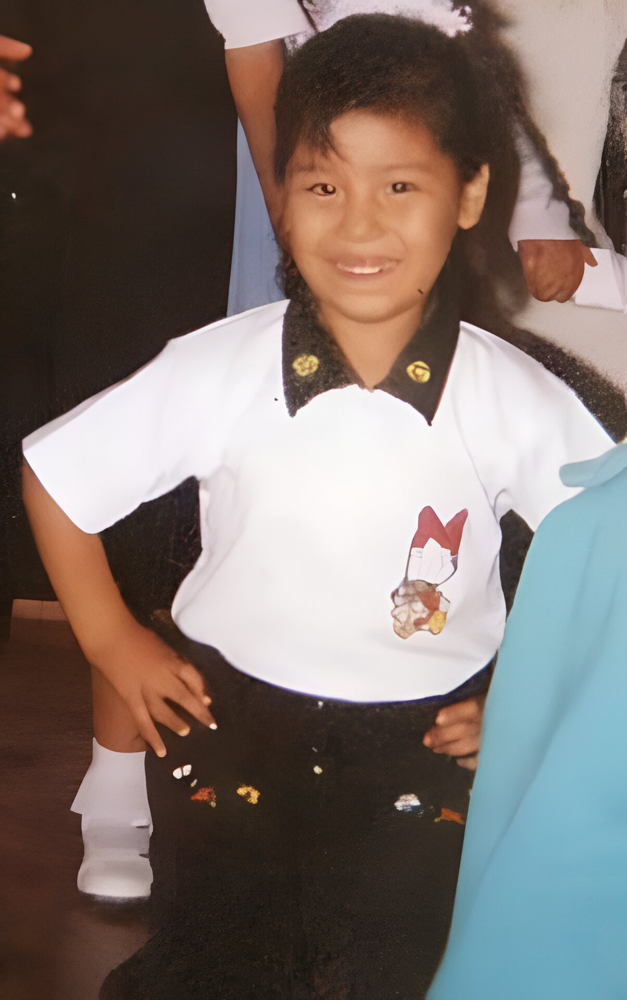
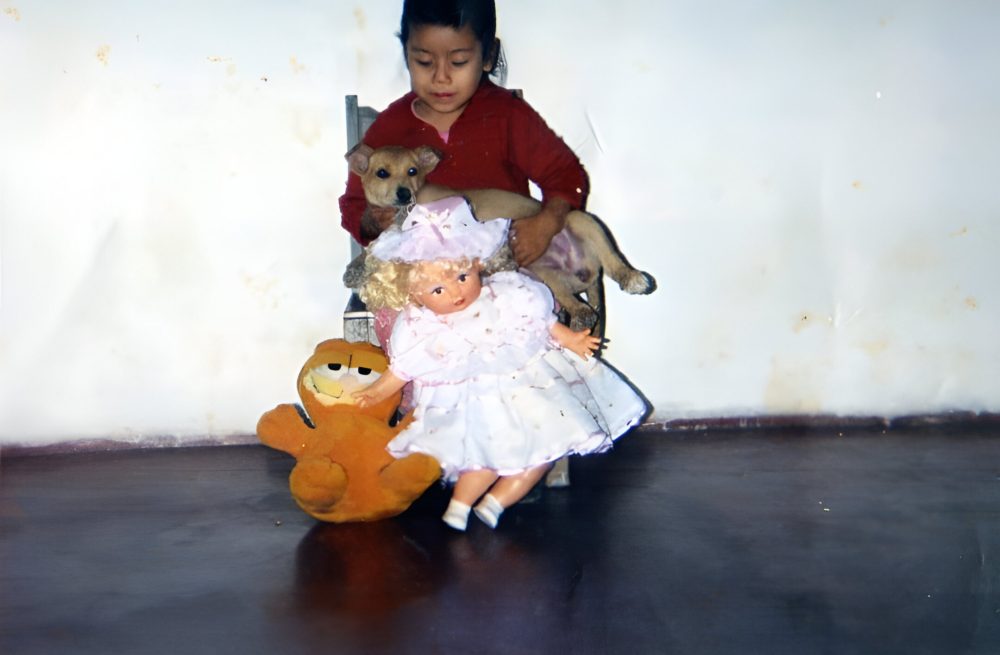

Naci el 30 de Noviembre del 2024, fui la única y última hija mujer de tres hermanos, desde pequeña mi alegría y sobretodo mi sonrisa fue lo que más me identificó. Destaque en todas mis actividades de mi clegio sobretodo en las danzas pues quice ser una gran artista.

SOBRE MÍ
Mis padres y hermanos me amaron y cuidaron siempre; mis amigos y profesores me apoyaron en todo momento. Lastimosamente un 20 de setiembre del 2003 cuando fui al médico por unos mareos y dolor de cabeza me diagnosticaron tumor cerebral que en 20 días me alejó de quienes más amaba. Me fui 13 de Octubre del 2003 dejando un vacío y un dolor muy grande en mi familia; pero con la esperanza y la promesa de cuidarlos desde el cielo. Y con la seguridad de que siempreme recuerden y me guarden en sus corazones de quienes me conocieron..

Mis gustos
Mi comida favorita era el Olluquito con Carneeeeeeeeeeeeeeeeeee
Mis dulces favoritos los chocolates, chicles y halls